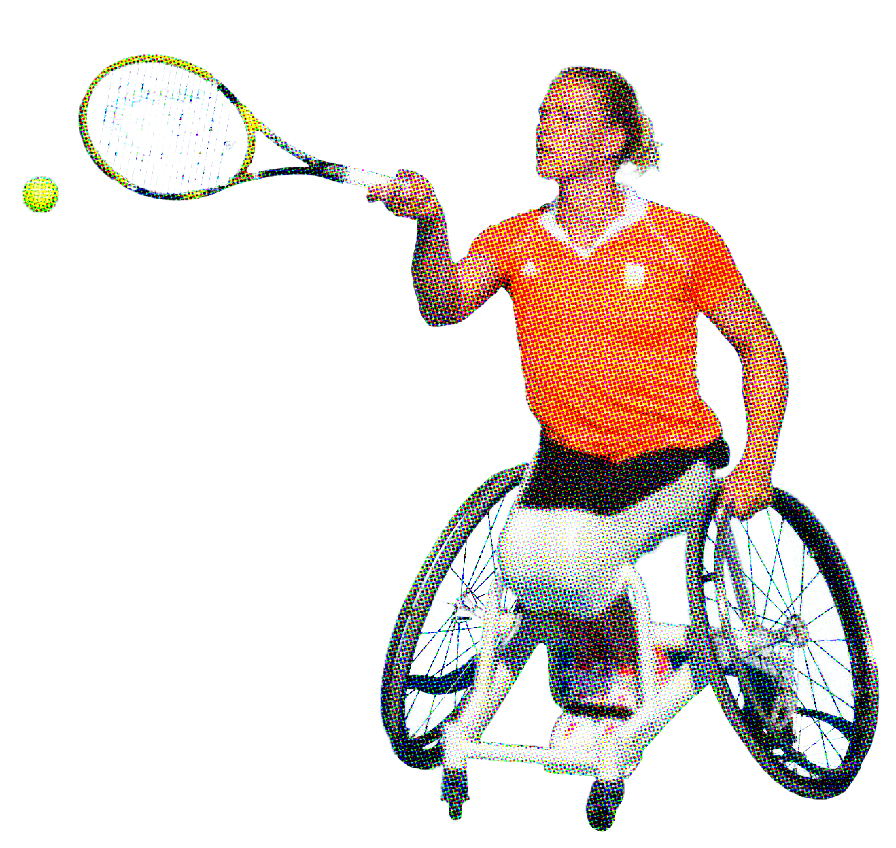
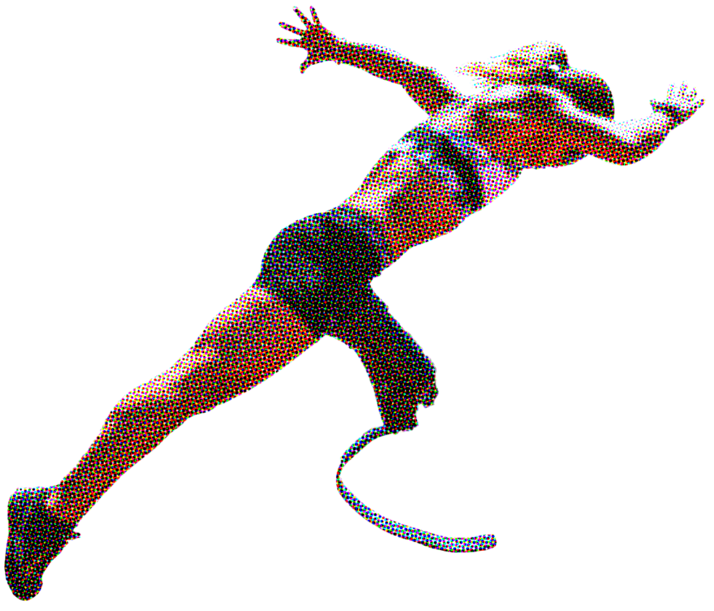

Paralympic Games:
Celebrating Strength, Resilience, and Achievement
The Paralympic Games began in 1960 and are a major sporting event for athletes with disabilities. These Games give athletes with physical challenges a chance to compete at the highest level, showing the world their incredible skills and determination. Just like the Olympics, the Paralympics are held every four years, following the Summer and Winter Olympic Games.
Esther Vergeer
wheelchair tennis
Some famous Paralympic athletes include Tatyana McFadden, a U.S. wheelchair racer, and Ellie Simmonds, a British swimmer who became a Paralympic champion at just 13 years old. Another inspiring athletes are Bebe Vio, an Italian fencer, and Oscar Pistorius, the "Blade Runner". These athletes show that anyone can achieve great things with hard work and dedication.
